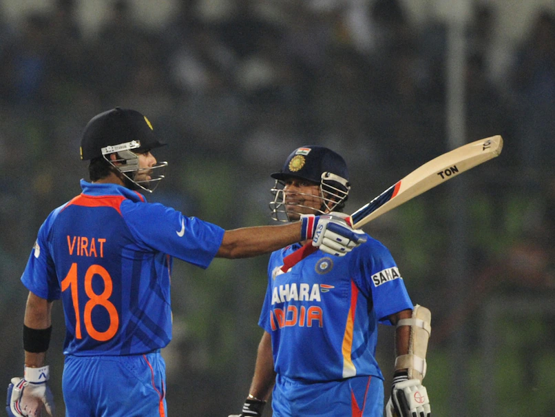

Date: September 01, 2023 07:48 AM IST
World number one Carlos Alcaraz surged into the last 16 of the US Open on Saturday as Tunisia's Ons Jabeur kept her dream of a first Grand Slam title alive with victory in a three-set thriller. Alcaraz, looking to become the first man to successfully defend the title since Roger Federer in 2008, produced a flurry of magical shots en route to dispatching British 26th seed Dan Evans 6-2, 6-3, 4-6, 6-3. It was another stylish victory for the 20-year-old Spaniard, who will face Italy's Matteo Arnaldi in the fourth round on Monday. The Spaniard kept Evans on the back foot with his booming forehand while delighting the Arthur Ashe Stadium crowd with several of his signature forehand drop shots. Alcaraz also conjured one of the shots of the tournament to clinch a decisive break in the fourth set, curling a logic-defying forehand up the line past Evans for a 4-2 lead. Alcaraz, who will surrender his world number one ranking to Novak Djokovic at the end of this tournament, admitted he was motivated by matching Federer in defending his crown. "Obviously defending the title is a goal for me," he said. "I'm looking for that. Nobody's done it here since Roger so I'd love to be part of tournament history with him." Alcaraz's win keeps him on track for a repeat quarter-final against Italy's Jannik Sinner, a year after the two men dueled in an epic five-hour five-setter that finished at 2.50am, the latest finish in US Open history. Sixth seed Sinner did his part to keep the rematch on course Saturday with a stylish 6-3, 2-6, 6-4, 6-2 win over Swiss veteran Stan Wawrinka. Alcaraz's last-16 opponent Arnaldi, meanwhile, advanced after upsetting 16th-seeded Briton Cameron Norrie, winning 6-3, 6-4, 6-3 in just under two hours. Arnaldi, 22, had never played in the main draw of a Grand Slam before this season, with a brief run to the second round at Roland Garros his best performance in a major championship. There was better luck for another member of Britain's US Open contingent elsewhere though, with Jack Draper reaching the last 16 of a Grand Slam for the first time with a 6-4, 6-2, 3-6, 6-3 victory over American world No.89 Michael Mmoh. Draper will face eighth-seeded Russian Andrey Rublev on Monday for a place in the quarter-finals. Rublev, a quarter-finalist at last year's tournament, defeated France's Arthur Rinderknech 3-6, 6-3, 6-1, 7-5 to advance. Meanwhile Russia's 2021 US Open champion and third seed Daniil Medvedev made it safely into the last 16 in a late-night 6-2, 6-2, 7-6 (8/6) victory over Argentina's Sebastian Baez. - Jabeur digs deep - Arguably the game of day six, came in the women's draw, where popular Tunsian fifth seed Jabeur overcame a courageous display by injured opponent Marie Bouzkova to advance. Czech No.31 seed Bouzkova started strongly to win the opening set against Jabeur, who has been laid low by flu since the start of the championships. But the game changed midway through the second set when Bouzkova suffered what appeared to be a thigh injury, severely hampering her mobility thereafter. Despite grimacing and wincing in pain, she somehow managed to keep on playing as Jabeur dug deep to complete a 5-7, 7-6 (7/5), 6-3 in 2hr 56min on the Arthur Ashe Stadium court. "This is a tough sport. You always don't want to give up. I really respect her for that," Jabeur said. Jabeur, who faces China's Zheng Qinwen in the last 16 on Monday, is chasing a first Grand Slam title after suffering agonising defeats in three major championship finals in the past two seasons. Elsewhere Saturday, Australian Open champion Aryna Sabalenka maintained her dominant start to the tournament with a 60-minute demolition of France's Clara Burel, winning 6-1, 6-1. The Belarusian right-hander will play Russia's 13th seed Daria Kasatkina on Monday in the last 16. Kasatkina booked her place in the fourth round with a 6-3, 6-4 win over Belgium's Greet Minnen. Meanwhile 17th seed Madison Keys became the second American woman into the last 16 after Coco Gauff with a 5-7, 6-2, 6-2 win over Russian 14th seed Liudmila Samsonova. Keys will play compatriot and third seed Jessica Pegula in the last 16. Pegula outfought Ukraine's 26th-ranked Elina Svitolina 6-4, 4-6, 6-2 to reach the fourth round. Wimbledon champion Marketa Vondrousova wasted no time in sweeping into the last 16, taking just 56 minutes to dismantle Russia's Ekaterina Alexandrova 6-2, 6-1. Vondrousova plays US youngster Peyton Stearns in the next round. Listen to the latest songs, only on JioSaavn.com China's Zheng meanwhile matched her best result at a Grand Slam -- a fourth round appearance at last year's French Open -- by rallying to beat Italy's Lucia Bronzetti 6-3, 4-6, 6-4.